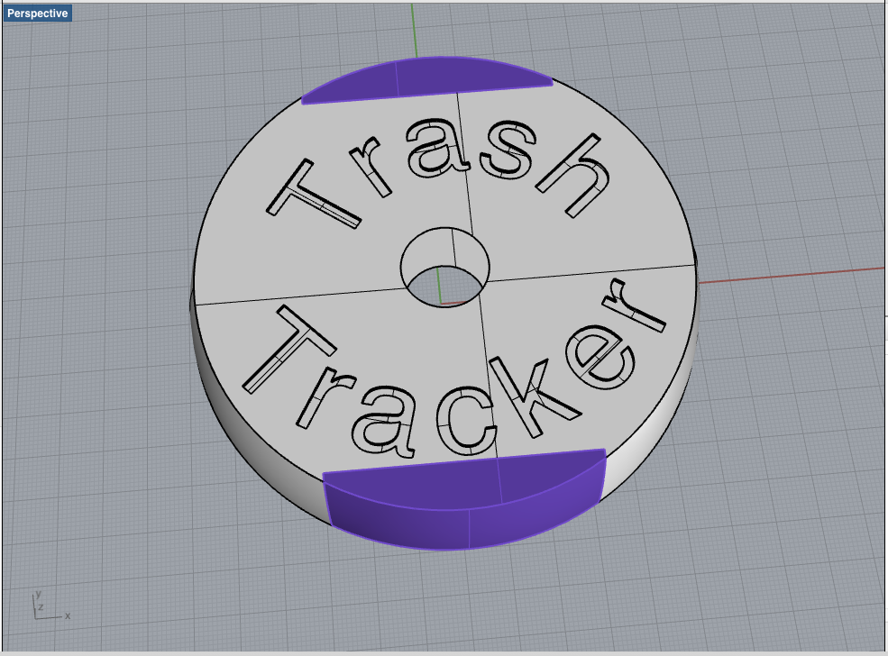

Computer-Aided Design
Design with every software and technology
Raster image software and tablet
This week we have been invited to play around with all technology's in Design.
First i begin to design my final project in windows paint, Krita, MyPaint and Gimp.
I have tried the tablet table and monitor wacom HD13.
After install it, in windows 8 64bits, i find a bug in software's Krita and MyPaint.
The pointer have an offset from the point where the pencil are.
So i paint it in Windows Paint.
And after thart in Gimp.
The result's are shown above

Here is the link to this week files. :)
Vector image software
After playing with Raster, i try vectorial software, InkScape. I install easaly inkscape in my mac, but i have need to install X11 also. Inkscape is ok for me, i'm an engenieer so i strougle a bit with design ;) Inkscape in my mac sometimes from nowhere break and close, but i keep it save all 10 minutes. I strougle a bit with some comand's like clip. A the first i try to remove a part from an object but what i need to do is the inverse. So i do it. Designing in Inkscape was great because confront me with real measurs and i nedd to be conscient of the how my project will be made.3D image software
I try to use Rhino, I have use it once before to build a part to my car that have been broken. And after i had printed that part. I this case i try to figure out more what Rhino is and can do. Fist of all i made a concept sketch of my final project. I learn how to put Words in a circle. It is simple after i figure how it is done, and after that i play around with cicle's radio's and another letter caracteristic's I learn also how to put materials in my design. I do it easaly and i intent to make my sketch rendered :) I will gona try to install in mac the Groshopper. For that and because i have a mac i need to install a virtual machine. I Use virtualbox and windows xp.
Sketch of the Trash Tracker made in Rhino
First Rendered of the Trash Tracker made in Rhino
Antimony
When i have tried use antimony in my mac, it not work, breack and close, i'm trying to use it in virtual XP.Here is the link to this week files. :)